-Turning data into relevance-
Quem somos?
Synoire ADTech Solutions é uma empresa de tecnologia especializada em publicidade digital, inteligência de mídia e automação de campanhas.
Criada a partir da ideia de que a publicidade poderia ser muito mais inteligente, a Synoire desenvolve tecnologias que conectam dados, audiência e mídia para transformar a maneira como marcas encontram, entendem e alcançam seus públicos.
Em vez de simplesmente exibir anúncios, a Synoire trabalha nos bastidores da publicidade digital: analisando comportamentos, identificando padrões, entendendo contextos e utilizando inteligência tecnológica para determinar qual mensagem deve chegar a qual pessoa, no momento mais relevante e através do canal mais adequado.
A empresa atua como uma camada de inteligência entre anunciantes, agências, publishers e consumidores.
A ideia por trás da Synoire
Para a Synoire, cada impressão publicitária é apenas o ponto final de uma cadeia muito maior de informações.
Antes de um anúncio aparecer na tela de alguém, existem centenas de variáveis que podem ser consideradas: contexto, horário, dispositivo, ambiente, comportamento de navegação, perfil de audiência, histórico de campanhas, intenção e diversos outros sinais.
A tecnologia da Synoire existe para interpretar essa complexidade.
O que a Synoire faz?
A Synoire desenvolve soluções de AdTech voltadas para inteligência e eficiência em publicidade digital.
Sua infraestrutura pode ser utilizada para:
- inteligência e segmentação de audiência;
- automação de campanhas digitais;
- otimização de mídia em tempo real;
- análise de performance publicitária;
- gerenciamento e distribuição de inventário;
- contextualização de anúncios;
- inteligência de dados para anunciantes e publishers;
- mensuração e atribuição de campanhas;
- otimização de investimentos em mídia.
A empresa não busca simplesmente entregar mais anúncios.
Busca entregar anúncios mais relevantes.
A filosofia
A Synoire acredita que o futuro da publicidade não está em interromper as pessoas, mas em entender o contexto em que elas estão.
Por isso, sua filosofia pode ser resumida em três conceitos:
DATA. CONTEXT. IMPACT.
Dados para entender.
Contexto para interpretar.
Impacto para transformar informação em resultado.
A Synoire no ecossistema de publicidade
Dentro do ecossistema digital, a Synoire funciona como uma ponte tecnológica.
De um lado estão as marcas, que precisam alcançar pessoas e transformar investimento publicitário em resultados.
Do outro estão os publishers e plataformas, que possuem inventário e audiência.
No meio existe uma quantidade gigantesca de dados, sinais e possibilidades.
É nesse espaço que a Synoire atua.
Sua tecnologia processa essas informações e ajuda a tomar decisões de mídia em uma escala que seria impossível de realizar manualmente.
Em uma frase:
A Synoire é a inteligência tecnológica que conecta dados, audiência e publicidade para tornar cada impressão mais relevante.
O futuro
Para a Synoire, a publicidade digital está deixando de ser uma disputa por atenção e se tornando uma ciência de contexto e relevância.
À medida que o volume de dados cresce, a capacidade de interpretá-los se torna tão importante quanto a própria capacidade de coletá-los.
É por isso que a Synoire não se posiciona apenas como uma empresa de publicidade.
Ela se posiciona como uma empresa de infraestrutura inteligente para a publicidade digital.
Seu objetivo é construir a tecnologia que permite que marcas tomem decisões melhores, publishers monetizem melhor seu inventário e consumidores recebam experiências publicitárias mais relevantes.